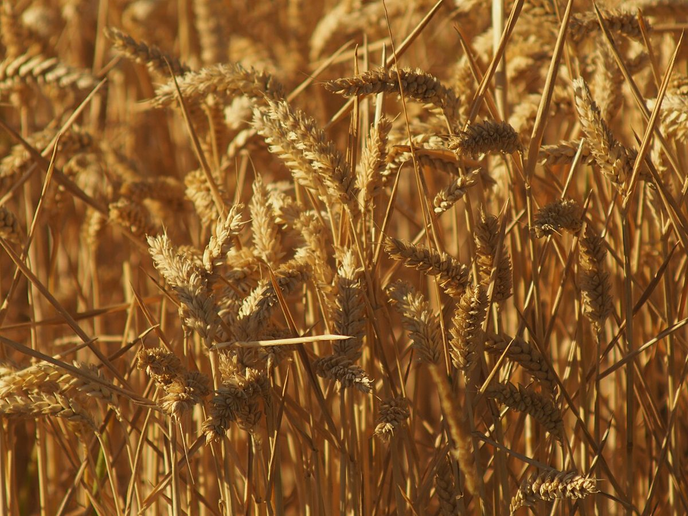

パン工房 / 兵庫県多可郡多可町
conanaパン工房conana
兵庫県多可郡多可町にあるパン屋「パン工房conana」のご案内ページです。営業時間やメニューなどの詳しいことは準備中。まずはInstagramをのぞいてみてください。

制作側の連想
「conana」から、石臼を思い浮かべた
店名の由来は分かりません。制作側は「conana」の響きから、日本語の「こな(粉)」を連想し、粉を挽く石臼のイメージでこのサイトを組みました。上の臼と下の臼が重なって回るように、ページも「挽く」「重ねる」で構成しています。制作側の連想で、お店の理念・由来とは無関係です。
ひと挽きの目盛り(イメージ)
穂から粉まで、四つの丸。
写真は工程を連想した、国外・撮影地不明のフリー素材です。お店の工程や商品を示すものではありません。



窯のイメージ
火のそばの二枚。


ご案内
お店のこと(確認できたものだけ)
| 所在地 | 〒679-1211 兵庫県多可郡多可町加美区寺内１４０−３ |
|---|---|
| 電話 | なし |
| 営業時間 | 準備中 |
| 定休日 | 準備中 |
| ご予約 | 準備中 |
| 駐車場 | 準備中 |
| SNS | Instagram @taka_conana |